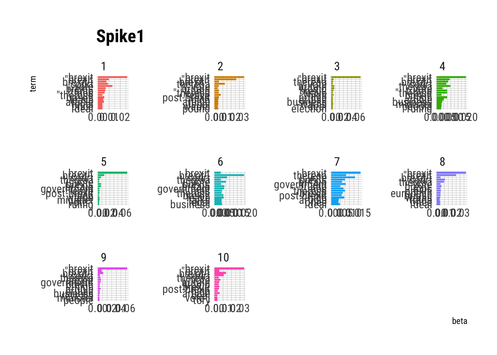
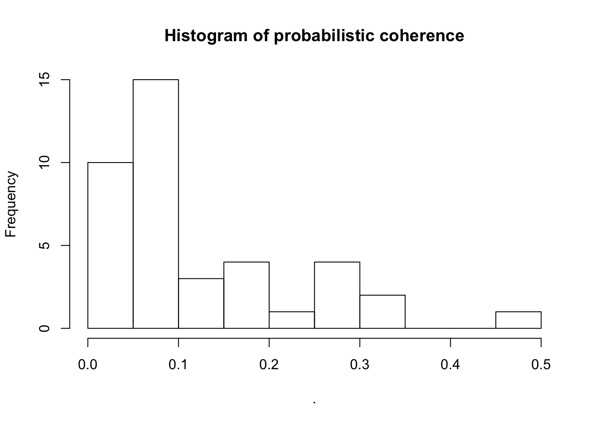

Last updated: 2020-02-17
Checks: 7 0
Knit directory: text_classification/
This reproducible R Markdown analysis was created with workflowr (version 1.4.0). The Checks tab describes the reproducibility checks that were applied when the results were created. The Past versions tab lists the development history.
Great! Since the R Markdown file has been committed to the Git repository, you know the exact version of the code that produced these results.
Great job! The global environment was empty. Objects defined in the global environment can affect the analysis in your R Markdown file in unknown ways. For reproduciblity it’s best to always run the code in an empty environment.
The command set.seed(20200216) was run prior to running the code in the R Markdown file. Setting a seed ensures that any results that rely on randomness, e.g. subsampling or permutations, are reproducible.
Great job! Recording the operating system, R version, and package versions is critical for reproducibility.
Nice! There were no cached chunks for this analysis, so you can be confident that you successfully produced the results during this run.
Great job! Using relative paths to the files within your workflowr project makes it easier to run your code on other machines.
Great! You are using Git for version control. Tracking code development and connecting the code version to the results is critical for reproducibility. The version displayed above was the version of the Git repository at the time these results were generated.
Note that you need to be careful to ensure that all relevant files for the analysis have been committed to Git prior to generating the results (you can use wflow_publish or wflow_git_commit). workflowr only checks the R Markdown file, but you know if there are other scripts or data files that it depends on. Below is the status of the Git repository when the results were generated:
Ignored files:
Ignored: .Rhistory
Ignored: .Rproj.user/
Untracked files:
Untracked: .DS_Store
Untracked: data/spike_1/
Unstaged changes:
Modified: analysis/index.Rmd
Note that any generated files, e.g. HTML, png, CSS, etc., are not included in this status report because it is ok for generated content to have uncommitted changes.
These are the previous versions of the R Markdown and HTML files. If you’ve configured a remote Git repository (see ?wflow_git_remote), click on the hyperlinks in the table below to view them.
| File | Version | Author | Date | Message |
|---|---|---|---|---|
| Rmd | 520c4f4 | Sefa Ozalp | 2020-02-17 | add topic detection using textmineR |
library(tidyverse)── Attaching packages ────────────────────────────────────────────────────────────────────────────────────────────────────── tidyverse 1.2.1 ──✔ ggplot2 3.2.1 ✔ purrr 0.3.2
✔ tibble 2.1.3 ✔ dplyr 0.8.3
✔ tidyr 1.0.0 ✔ stringr 1.4.0
✔ readr 1.3.1 ✔ forcats 0.4.0── Conflicts ───────────────────────────────────────────────────────────────────────────────────────────────────────── tidyverse_conflicts() ──
✖ dplyr::filter() masks stats::filter()
✖ dplyr::lag() masks stats::lag()# 1. preprocessing======
# **1.1. read in data====
spike1_raw <- list.files(here::here("data/spike_1/"), full.names = T) %>%
map_dfr(~read_csv(.) %>% select(-TITLE, -DATELINE))Parsed with column specification:
cols(
BYLINE = col_character(),
DATE = col_character(),
DATELINE = col_logical(),
HEADLINE = col_character(),
LENGTH = col_character(),
PUBLICATION = col_character(),
SECTION = col_character(),
TITLE = col_logical()
)Parsed with column specification:
cols(
BYLINE = col_character(),
DATE = col_character(),
DATELINE = col_logical(),
HEADLINE = col_character(),
LENGTH = col_character(),
PUBLICATION = col_character(),
SECTION = col_character(),
TITLE = col_logical()
)
Parsed with column specification:
cols(
BYLINE = col_character(),
DATE = col_character(),
DATELINE = col_logical(),
HEADLINE = col_character(),
LENGTH = col_character(),
PUBLICATION = col_character(),
SECTION = col_character(),
TITLE = col_logical()
)## **1.2. select distinct headlines====
spike1_unique <- spike1_raw %>%
mutate(headline_low=str_to_lower(HEADLINE)) %>%
distinct(headline_low, .keep_all = T)%>%
mutate(headline_id=rownames(.)) %>%
select(headline_id, everything())
# looks like there are still duplicates, wow.
## **1.3. parse date column properly====
spike1_unique <- spike1_unique%>%
mutate(date_parsed= str_sub(DATE, start = 1L, end = 17L) %>%
str_trim() %>%
lubridate::mdy())
spike1_unique %>% select(date_parsed) %>% str() #parsed correctlyClasses 'spec_tbl_df', 'tbl_df', 'tbl' and 'data.frame': 3384 obs. of 1 variable:
$ date_parsed: Date, format: "2016-10-31" "2016-11-01" ...## **1.4. create a rather standardised publication column====
spike1_unique %>%
select(PUBLICATION) %>%
distinct() # 21 publications# A tibble: 21 x 1
PUBLICATION
<chr>
1 The Independent (United Kingdom)
2 mirror.co.uk
3 MailOnline
4 Express Online
5 The Guardian
6 The Daily Telegraph (London)
7 The Express
8 i-Independent Print Ltd
9 telegraph.co.uk
10 The Observer (London)
# … with 11 more rowsspike1_unique <- spike1_unique %>%
mutate(publication_simplified= case_when(
str_detect(string = PUBLICATION, pattern = regex("mail", ignore_case = T) ) ~ "Daily Mail",
str_detect(string = PUBLICATION, pattern = regex("mirror", ignore_case = T) ) ~ "Daily Mirror",
str_detect(string = PUBLICATION, pattern = regex("people", ignore_case = T) ) ~ "People",#exclude
str_detect(string = PUBLICATION, pattern = regex("star", ignore_case = T) ) ~ "Daily Star", #exclude
str_detect(string = PUBLICATION, pattern = regex("express", ignore_case = T) ) ~ "The Express",
str_detect(string = PUBLICATION, pattern = regex("independent", ignore_case = T) ) ~ "The Independent",
str_detect(string = PUBLICATION, pattern = regex("telegraph", ignore_case = T) ) ~ "Daily Telegraph",
str_detect(string = PUBLICATION, pattern = regex("guardian", ignore_case = T) ) ~ "The Guardian",
str_detect(string = PUBLICATION, pattern = regex("observer", ignore_case = T) ) ~ "The Observer",
str_detect(string = PUBLICATION, pattern = regex(" sun ", ignore_case = T) ) ~ "The Sun",
str_detect(string = PUBLICATION, pattern = regex("times", ignore_case = T) ) ~ "Times"
)
)
spike1_unique %>%
select(publication_simplified) %>%
distinct() #11 publications, cool.# A tibble: 11 x 1
publication_simplified
<chr>
1 The Independent
2 Daily Mirror
3 Daily Mail
4 The Express
5 The Guardian
6 Daily Telegraph
7 The Observer
8 Times
9 The Sun
10 People
11 Daily Star # **1.5. add publication type and politics====
spike1_unique <- spike1_unique %>%
mutate( publication_politics= case_when(
str_detect(string = publication_simplified, pattern = regex("mail", ignore_case = T) ) ~ "right",
str_detect(string = publication_simplified, pattern = regex("mirror", ignore_case = T) ) ~ "centre-left",
str_detect(string = publication_simplified, pattern = regex("people", ignore_case = T) ) ~ "centre-left",#exclude
str_detect(string = publication_simplified, pattern = regex("star", ignore_case = T) ) ~ "non-political", #exclude
str_detect(string = publication_simplified, pattern = regex("express", ignore_case = T) ) ~ "right",
str_detect(string = publication_simplified, pattern = regex("independent", ignore_case = T) ) ~ "centre",
str_detect(string = publication_simplified, pattern = regex("telegraph", ignore_case = T) ) ~ "centre-right",
str_detect(string = publication_simplified, pattern = regex("guardian", ignore_case = T) ) ~ "centre-left",
str_detect(string = publication_simplified, pattern = regex("observer", ignore_case = T) ) ~ "centre-left",
str_detect(string = publication_simplified, pattern = regex("the sun", ignore_case = T) ) ~ "right",
str_detect(string = publication_simplified, pattern = regex("times", ignore_case = T) ) ~ "centre-right"
)
) %>%
mutate(publication_format= case_when(
str_detect(string = publication_simplified, pattern = regex("mail", ignore_case = T) ) ~ "tabloid",
str_detect(string = publication_simplified, pattern = regex("mirror", ignore_case = T) ) ~ "tabloid",
str_detect(string = publication_simplified, pattern = regex("people", ignore_case = T) ) ~ "tabloid",
str_detect(string = publication_simplified, pattern = regex("star", ignore_case = T) ) ~ "tabloid",
str_detect(string = publication_simplified, pattern = regex("express", ignore_case = T) ) ~ "tabloid",
str_detect(string = publication_simplified, pattern = regex("independent", ignore_case = T) ) ~ "online",
str_detect(string = publication_simplified, pattern = regex("telegraph", ignore_case = T) ) ~ "broadsheet",
str_detect(string = publication_simplified, pattern = regex("guardian", ignore_case = T) ) ~ "broadsheet", #i guess it's tabloid sized now
str_detect(string = publication_simplified, pattern = regex("observer", ignore_case = T) ) ~ "broadsheet",
str_detect(string = publication_simplified, pattern = regex("the sun", ignore_case = T) ) ~ "tabloid",
str_detect(string = publication_simplified, pattern = regex("times", ignore_case = T) ) ~ "broadsheet"
)
)
# **1.6. take a look at some summaries====
spike1_unique %>% group_by(publication_simplified) %>% summarise(n=n())# A tibble: 11 x 2
publication_simplified n
<chr> <int>
1 Daily Mail 391
2 Daily Mirror 240
3 Daily Star 18
4 Daily Telegraph 554
5 People 7
6 The Express 710
7 The Guardian 298
8 The Independent 790
9 The Observer 32
10 The Sun 123
11 Times 221spike1_unique %>% group_by(publication_politics) %>% summarise(n=n())# A tibble: 5 x 2
publication_politics n
<chr> <int>
1 centre 790
2 centre-left 577
3 centre-right 775
4 non-political 18
5 right 1224spike1_unique %>% group_by(publication_format) %>% summarise(n=n())# A tibble: 3 x 2
publication_format n
<chr> <int>
1 broadsheet 1105
2 online 790
3 tabloid 1489spike1_unique %>% group_by(publication_simplified,publication_format,publication_politics) %>% summarise(n=n())# A tibble: 11 x 4
# Groups: publication_simplified, publication_format [11]
publication_simplified publication_format publication_politics n
<chr> <chr> <chr> <int>
1 Daily Mail tabloid right 391
2 Daily Mirror tabloid centre-left 240
3 Daily Star tabloid non-political 18
4 Daily Telegraph broadsheet centre-right 554
5 People tabloid centre-left 7
6 The Express tabloid right 710
7 The Guardian broadsheet centre-left 298
8 The Independent online centre 790
9 The Observer broadsheet centre-left 32
10 The Sun tabloid right 123
11 Times broadsheet centre-right 221library(topicmodels)
library(tm)Loading required package: NLP
Attaching package: 'NLP'The following object is masked from 'package:ggplot2':
annotatespike1_tm <- spike1_unique %>%
select(headline_low)
headlines_corpus <- Corpus(VectorSource(spike1_tm)) %>%
tm_map( removeWords, stopwords("english")) %>%
tm_map( removeWords, stopwords("SMART"))#remove stop wordsWarning in tm_map.SimpleCorpus(., removeWords, stopwords("english")):
transformation drops documentsWarning in tm_map.SimpleCorpus(., removeWords, stopwords("SMART")):
transformation drops documentsheadlines_dtm <- DocumentTermMatrix(headlines_corpus)
headlines_lda <- LDA(headlines_dtm, k=10, control = list(seed=1234))
headlines_lda %>% summary() Length Class Mode
1 LDA_VEM S4 library(tidytext)
headlines_topics <- tidy(headlines_lda, matrix="beta")
headlines_topics# A tibble: 113,530 x 3
topic term beta
<int> <chr> <dbl>
1 1 !': 0.0000299
2 2 !': 0.00000318
3 3 !': 0.0000380
4 4 !': 0.0000518
5 5 !': 0.0000267
6 6 !': 0.0000581
7 7 !': 0.0000116
8 8 !': 0.0000370
9 9 !': 0.00000474
10 10 !': 0.00000661
# … with 113,520 more rowsheadlines_top_terms <- headlines_topics %>%
group_by(topic) %>%
top_n(15, beta) %>%
ungroup() %>%
arrange(topic, -beta)
headlines_top_terms# A tibble: 150 x 3
topic term beta
<int> <chr> <dbl>
1 1 brexit 0.0263
2 1 vote 0.0129
3 1 "\"brexit" 0.00962
4 1 court 0.00897
5 1 "brexit\"," 0.00784
6 1 brexit; 0.00708
7 1 trump 0.00660
8 1 mps 0.00615
9 1 brexit, 0.00581
10 1 article 0.00537
# … with 140 more rowsheadlines_top_terms %>%
mutate(term = reorder(term, beta)) %>%
ggplot(aes(term, beta, fill = factor(topic))) +
geom_col(show.legend = FALSE) +
facet_wrap(~ topic, scales = "free") +
coord_flip()+
labs(title="Spike1")+
hrbrthemes::theme_ipsum_rc()
library(textmineR)Loading required package: Matrix
Attaching package: 'Matrix'The following objects are masked from 'package:tidyr':
expand, pack, unpack
Attaching package: 'textmineR'The following object is masked from 'package:Matrix':
updateThe following object is masked from 'package:topicmodels':
posteriorThe following object is masked from 'package:stats':
updateheadlines_textminer_dtm <- CreateDtm(doc_vec = spike1_unique$headline_low,
doc_names = spike1_unique$headline_id,
ngram_window = c(1, 3),
stopword_vec = c(tm::stopwords("english"), # stopwords from tm
tm::stopwords("SMART")), # this is the default value
lower = TRUE,
remove_punctuation = FALSE,
remove_numbers = FALSE,
verbose = TRUE,
cpus = 4)
|
|======= | 10%
|
|============= | 20%
|
|==================== | 30%
|
|========================== | 40%
|
|================================= | 50%
|
|======================================= | 60%
|
|============================================== | 70%
|
|==================================================== | 80%
|
|=========================================================== | 90%
|
|=================================================================| 100%
|
|======= | 10%
|
|============= | 20%
|
|==================== | 30%
|
|========================== | 40%
|
|================================= | 50%
|
|======================================= | 60%
|
|============================================== | 70%
|
|==================================================== | 80%
|
|=========================================================== | 90%
|
|=================================================================| 100%optimise_k_func <- function(x){
headlines_textminer_model <- FitLdaModel(dtm = headlines_textminer_dtm,
k = x,
iterations = 200, # i recommend a larger value, 500 or more
alpha = 0.1, # this is the default value
beta = 0.05, # this is the default value
cpus = 4)
headlines_textminer_model$r2 <- CalcTopicModelR2(dtm = headlines_textminer_dtm,
phi = headlines_textminer_model$phi,
theta = headlines_textminer_model$theta,
cpus = 4)
headlines_textminer_model$coherence <- CalcProbCoherence(phi = headlines_textminer_model$phi,
dtm = headlines_textminer_dtm,
M = 5)
results <- tibble(k_value=x,r2=headlines_textminer_model$r2, coherence=headlines_textminer_model$coherence)
print(results)
}
k_values <- seq(5,100,5)
library(furrr)Loading required package: futureplan(multicore)
optimise_k_results <- future_map_dfr(k_values,optimise_k_func)# A tibble: 5 x 3
k_value r2 coherence
<dbl> <dbl> <dbl>
1 5 0.00487 0.0330
2 5 0.00487 0.0252
3 5 0.00487 0.0847
4 5 0.00487 0.259
5 5 0.00487 0.0180
# A tibble: 10 x 3
k_value r2 coherence
<dbl> <dbl> <dbl>
1 10 0.0114 0.259
2 10 0.0114 0.0111
3 10 0.0114 0.0775
4 10 0.0114 0.0404
5 10 0.0114 0.0247
6 10 0.0114 0.358
7 10 0.0114 0.180
8 10 0.0114 0.0305
9 10 0.0114 0.0666
10 10 0.0114 0.156
# A tibble: 15 x 3
k_value r2 coherence
<dbl> <dbl> <dbl>
1 15 0.0156 0.0549
2 15 0.0156 0.114
3 15 0.0156 0.0405
4 15 0.0156 0.155
5 15 0.0156 0.0903
6 15 0.0156 0.0840
7 15 0.0156 0.112
8 15 0.0156 0.0506
9 15 0.0156 0.0714
10 15 0.0156 0.262
11 15 0.0156 0.122
12 15 0.0156 0.0726
13 15 0.0156 0.254
14 15 0.0156 0.0831
15 15 0.0156 0.0231
# A tibble: 20 x 3
k_value r2 coherence
<dbl> <dbl> <dbl>
1 20 0.0164 0.0373
2 20 0.0164 0.176
3 20 0.0164 0.0683
4 20 0.0164 0.326
5 20 0.0164 0.0432
6 20 0.0164 0.0626
7 20 0.0164 0.0727
8 20 0.0164 0.131
9 20 0.0164 0.00724
10 20 0.0164 0.0772
11 20 0.0164 0.0409
12 20 0.0164 -0.000826
13 20 0.0164 0.103
14 20 0.0164 0.185
15 20 0.0164 0.0635
16 20 0.0164 0.0637
17 20 0.0164 0.160
18 20 0.0164 0.0467
19 20 0.0164 0.0917
20 20 0.0164 0.0210
# A tibble: 25 x 3
k_value r2 coherence
<dbl> <dbl> <dbl>
1 25 0.0182 0.104
2 25 0.0182 0.0782
3 25 0.0182 0.138
4 25 0.0182 0.0724
5 25 0.0182 0.0804
6 25 0.0182 0.284
7 25 0.0182 0.0259
8 25 0.0182 0.564
9 25 0.0182 0.0286
10 25 0.0182 0.0342
# … with 15 more rows
# A tibble: 30 x 3
k_value r2 coherence
<dbl> <dbl> <dbl>
1 30 0.0188 0.168
2 30 0.0188 0.0118
3 30 0.0188 0.0608
4 30 0.0188 0.154
5 30 0.0188 0.180
6 30 0.0188 0.218
7 30 0.0188 0.0484
8 30 0.0188 0.0766
9 30 0.0188 -0.00175
10 30 0.0188 0.0785
# … with 20 more rows
# A tibble: 35 x 3
k_value r2 coherence
<dbl> <dbl> <dbl>
1 35 0.0188 0.00361
2 35 0.0188 0.0190
3 35 0.0188 0.206
4 35 0.0188 0.105
5 35 0.0188 0.104
6 35 0.0188 0.0807
7 35 0.0188 0.168
8 35 0.0188 0.0116
9 35 0.0188 0.110
10 35 0.0188 0.0731
# … with 25 more rows
# A tibble: 40 x 3
k_value r2 coherence
<dbl> <dbl> <dbl>
1 40 0.0183 0.195
2 40 0.0183 0.00667
3 40 0.0183 0.252
4 40 0.0183 0.0826
5 40 0.0183 0.195
6 40 0.0183 0.0676
7 40 0.0183 0.0119
8 40 0.0183 0.0234
9 40 0.0183 0.0193
10 40 0.0183 0.00546
# … with 30 more rows
# A tibble: 45 x 3
k_value r2 coherence
<dbl> <dbl> <dbl>
1 45 0.0177 0.208
2 45 0.0177 0.0517
3 45 0.0177 0.217
4 45 0.0177 0.0851
5 45 0.0177 0.0991
6 45 0.0177 0.0861
7 45 0.0177 0.0815
8 45 0.0177 0.312
9 45 0.0177 0.124
10 45 0.0177 0.186
# … with 35 more rows
# A tibble: 50 x 3
k_value r2 coherence
<dbl> <dbl> <dbl>
1 50 0.0177 0.0996
2 50 0.0177 0.00879
3 50 0.0177 0.0457
4 50 0.0177 0.0521
5 50 0.0177 0.118
6 50 0.0177 0.00229
7 50 0.0177 0.0871
8 50 0.0177 0.0963
9 50 0.0177 0.0772
10 50 0.0177 0.323
# … with 40 more rows
# A tibble: 55 x 3
k_value r2 coherence
<dbl> <dbl> <dbl>
1 55 0.0156 0.252
2 55 0.0156 0.0191
3 55 0.0156 0.107
4 55 0.0156 0.0800
5 55 0.0156 0.0736
6 55 0.0156 0.118
7 55 0.0156 0.139
8 55 0.0156 0.191
9 55 0.0156 0.320
10 55 0.0156 0.0373
# … with 45 more rows
# A tibble: 60 x 3
k_value r2 coherence
<dbl> <dbl> <dbl>
1 60 0.0156 0.00905
2 60 0.0156 0.104
3 60 0.0156 0.0466
4 60 0.0156 0.190
5 60 0.0156 0.0359
6 60 0.0156 0.0798
7 60 0.0156 0.105
8 60 0.0156 0.246
9 60 0.0156 0.0717
10 60 0.0156 0.0268
# … with 50 more rows
# A tibble: 65 x 3
k_value r2 coherence
<dbl> <dbl> <dbl>
1 65 0.0154 0.0660
2 65 0.0154 0.392
3 65 0.0154 0.0143
4 65 0.0154 0.531
5 65 0.0154 0.164
6 65 0.0154 0.0292
7 65 0.0154 0.0307
8 65 0.0154 0.0417
9 65 0.0154 0.115
10 65 0.0154 0.0425
# … with 55 more rows
# A tibble: 70 x 3
k_value r2 coherence
<dbl> <dbl> <dbl>
1 70 0.0132 0.275
2 70 0.0132 0.0952
3 70 0.0132 0.154
4 70 0.0132 0.128
5 70 0.0132 0.0680
6 70 0.0132 0.250
7 70 0.0132 0.0115
8 70 0.0132 0.0242
9 70 0.0132 0.129
10 70 0.0132 0.530
# … with 60 more rows
# A tibble: 75 x 3
k_value r2 coherence
<dbl> <dbl> <dbl>
1 75 0.0118 0.0404
2 75 0.0118 0.0557
3 75 0.0118 0.0647
4 75 0.0118 0.0821
5 75 0.0118 0.0570
6 75 0.0118 0.165
7 75 0.0118 0.0745
8 75 0.0118 0.214
9 75 0.0118 0.0772
10 75 0.0118 0.217
# … with 65 more rows
# A tibble: 80 x 3
k_value r2 coherence
<dbl> <dbl> <dbl>
1 80 0.0112 0.0504
2 80 0.0112 0.0235
3 80 0.0112 0.0399
4 80 0.0112 0.0650
5 80 0.0112 0.0227
6 80 0.0112 0.110
7 80 0.0112 0.0190
8 80 0.0112 0.0546
9 80 0.0112 0.119
10 80 0.0112 0.115
# … with 70 more rows
# A tibble: 85 x 3
k_value r2 coherence
<dbl> <dbl> <dbl>
1 85 0.0105 0.317
2 85 0.0105 0.0355
3 85 0.0105 0.224
4 85 0.0105 0.249
5 85 0.0105 0.0312
6 85 0.0105 0.0508
7 85 0.0105 0.0596
8 85 0.0105 0.569
9 85 0.0105 0.0861
10 85 0.0105 0.0721
# … with 75 more rows
# A tibble: 90 x 3
k_value r2 coherence
<dbl> <dbl> <dbl>
1 90 0.00898 0.189
2 90 0.00898 0.0970
3 90 0.00898 0.0581
4 90 0.00898 0.0655
5 90 0.00898 0.0967
6 90 0.00898 0.244
7 90 0.00898 0.612
8 90 0.00898 0.0201
9 90 0.00898 0.111
10 90 0.00898 0.154
# … with 80 more rows
# A tibble: 95 x 3
k_value r2 coherence
<dbl> <dbl> <dbl>
1 95 0.00783 0.0751
2 95 0.00783 0.254
3 95 0.00783 0.0901
4 95 0.00783 0.0935
5 95 0.00783 0.0565
6 95 0.00783 0.222
7 95 0.00783 0.0588
8 95 0.00783 0.331
9 95 0.00783 0.0213
10 95 0.00783 0.385
# … with 85 more rows
# A tibble: 100 x 3
k_value r2 coherence
<dbl> <dbl> <dbl>
1 100 0.00704 0.0585
2 100 0.00704 0.582
3 100 0.00704 0.126
4 100 0.00704 0.0262
5 100 0.00704 0.0206
6 100 0.00704 0.331
7 100 0.00704 0.0265
8 100 0.00704 0.310
9 100 0.00704 0.482
10 100 0.00704 0.318
# … with 90 more rowsoptimise_k_results %>%
group_by(k_value, r2) %>%
summarise(coherence=mean(coherence)) %>% View()
headlines_textminer_model <- FitLdaModel(dtm = headlines_textminer_dtm,
k = 40,
iterations = 1000, # i recommend a larger value, 500 or more
alpha = 0.1, # this is the default value
beta = 0.05, # this is the default value
cpus = 4)
headlines_textminer_model$ll <- CalcLikelihood(dtm = headlines_textminer_dtm,
phi = headlines_textminer_model$phi,
theta = headlines_textminer_model$theta,
cpus = 2)
headlines_textminer_model$ll[1] -675879.9headlines_textminer_model$coherence <- CalcProbCoherence(phi = headlines_textminer_model$phi, dtm = headlines_textminer_dtm, M = 5)
summary(headlines_textminer_model$coherence) Min. 1st Qu. Median Mean 3rd Qu. Max.
0.007229 0.050837 0.073718 0.120547 0.181022 0.470649 headlines_textminer_model$coherence %>% hist(main="Histogram of probabilistic coherence")
headlines_textminer_model$top_terms <- GetTopTerms(phi = headlines_textminer_model$phi, M = 15)
head(headlines_textminer_model$top_terms,15) %>% View()
headlines_textminer_model$prevalence <- colSums(headlines_textminer_model$theta) / sum(headlines_textminer_model$theta) * 100
# textmineR has a naive topic labeling tool based on probable bigrams
headlines_textminer_model$labels <- LabelTopics(assignments = headlines_textminer_model$theta > 0.05,
dtm = headlines_textminer_dtm,
M = 1)
head(headlines_textminer_model$labels) label_1
t_1 "brexit_boost"
t_2 "eu_referendum"
t_3 "block_brexit"
t_4 "donald_trump"
t_5 "article_50"
t_6 "northern_ireland"headlines_textminer_model$summary <- data.frame(topic = rownames(headlines_textminer_model$phi),
label = headlines_textminer_model$labels,
coherence = round(headlines_textminer_model$coherence, 3),
prevalence = round(headlines_textminer_model$prevalence,3),
top_terms = apply(headlines_textminer_model$top_terms, 2, function(x){
paste(x, collapse = ", ")
}),
stringsAsFactors = FALSE)
headlines_textminer_model$summary[ order(headlines_textminer_model$summary$prevalence, decreasing = TRUE) , ][ 1:40 , ] %>%
write_csv(here::here("data/topic_models_spike1.csv")) #it seems k=80 is the best performing model but too many topics. k=40 is not too bad as well
headlines_textminer_model$summary[ order(headlines_textminer_model$summary$prevalence, decreasing = TRUE) , ][ 1:40 , ] %>%
as_tibble() %>%
rmarkdown::paged_table()
sessionInfo()R version 3.6.1 (2019-07-05)
Platform: x86_64-apple-darwin15.6.0 (64-bit)
Running under: macOS Mojave 10.14.6
Matrix products: default
BLAS: /Library/Frameworks/R.framework/Versions/3.6/Resources/lib/libRblas.0.dylib
LAPACK: /Library/Frameworks/R.framework/Versions/3.6/Resources/lib/libRlapack.dylib
locale:
[1] en_GB.UTF-8/en_GB.UTF-8/en_GB.UTF-8/C/en_GB.UTF-8/en_GB.UTF-8
attached base packages:
[1] stats graphics grDevices utils datasets methods base
other attached packages:
[1] furrr_0.1.0 future_1.14.0 textmineR_3.0.4
[4] Matrix_1.2-17 tidytext_0.2.2 tm_0.7-6
[7] NLP_0.2-0 topicmodels_0.2-8 forcats_0.4.0
[10] stringr_1.4.0 dplyr_0.8.3 purrr_0.3.2
[13] readr_1.3.1 tidyr_1.0.0 tibble_2.1.3
[16] ggplot2_3.2.1 tidyverse_1.2.1
loaded via a namespace (and not attached):
[1] nlme_3.1-141 fs_1.3.1 lubridate_1.7.4
[4] httr_1.4.1 rprojroot_1.3-2 SnowballC_0.6.0
[7] tools_3.6.1 backports_1.1.5 utf8_1.1.4
[10] R6_2.4.0 lazyeval_0.2.2 colorspace_1.4-1
[13] withr_2.1.2 tidyselect_0.2.5 compiler_3.6.1
[16] git2r_0.26.1 extrafontdb_1.0 cli_1.1.0
[19] rvest_0.3.4 formatR_1.7 xml2_1.2.2
[22] labeling_0.3 slam_0.1-45 scales_1.0.0
[25] systemfonts_0.1.1 digest_0.6.23 rmarkdown_1.15
[28] pkgconfig_2.0.3 htmltools_0.3.6 extrafont_0.17
[31] rlang_0.4.2 readxl_1.3.1 rstudioapi_0.10
[34] generics_0.0.2 jsonlite_1.6 tokenizers_0.2.1
[37] magrittr_1.5 modeltools_0.2-22 text2vec_0.5.1
[40] futile.logger_1.4.3 Rcpp_1.0.3 munsell_0.5.0
[43] RcppProgress_0.4.1 fansi_0.4.0 gdtools_0.2.0
[46] lifecycle_0.1.0 stringi_1.4.3 whisker_0.4
[49] yaml_2.2.0 plyr_1.8.4 grid_3.6.1
[52] hrbrthemes_0.6.0 listenv_0.7.0 parallel_3.6.1
[55] mlapi_0.1.0 crayon_1.3.4 lattice_0.20-38
[58] haven_2.1.1 hms_0.5.2 zeallot_0.1.0
[61] knitr_1.25 pillar_1.4.2 codetools_0.2-16
[64] reshape2_1.4.3 stopwords_1.0 stats4_3.6.1
[67] futile.options_1.0.1 glue_1.3.1 evaluate_0.14
[70] lambda.r_1.2.4 RcppParallel_4.4.3 data.table_1.12.2
[73] modelr_0.1.5 foreach_1.4.7 vctrs_0.2.1
[76] Rttf2pt1_1.3.7 cellranger_1.1.0 gtable_0.3.0
[79] assertthat_0.2.1 xfun_0.9 broom_0.5.2
[82] janeaustenr_0.1.5 iterators_1.0.12 workflowr_1.4.0
[85] globals_0.12.4 here_0.1